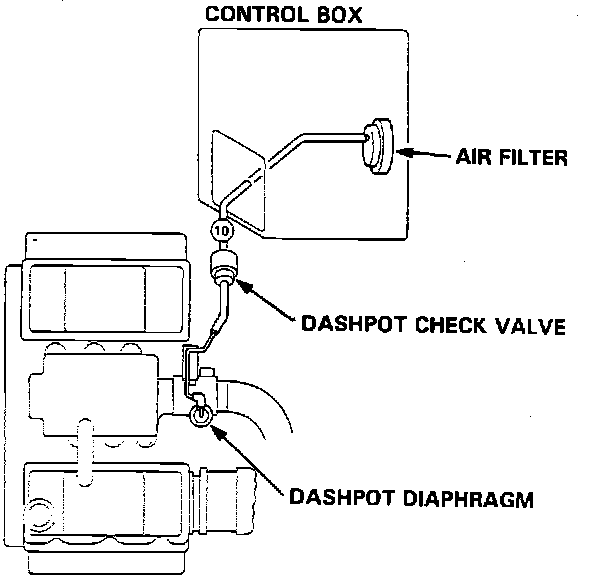

Dashpot: Testing and Inspection
Vacuum Lines:

1. Check vacuum hose for leaks, blockage, kinks, and proper fit.
2. Connect a hand-held vacuum pump to the dashpot diaphragm. Apply vacuum and observe dashpot linkage. The diaphragm assembly should hold vacuum and linkage should move freely. If not, replace the dashpot diaphragm assembly.
3. Connect a hand-held vacuum pump to the "DASHPOT" side of the vacuum check-valve. Apply vacuum and observe gauge. Vacuum should bleed off slowly. If vacuum check-valve holds vacuum or bleeds off too quickly, replace the vacuum check-valve.